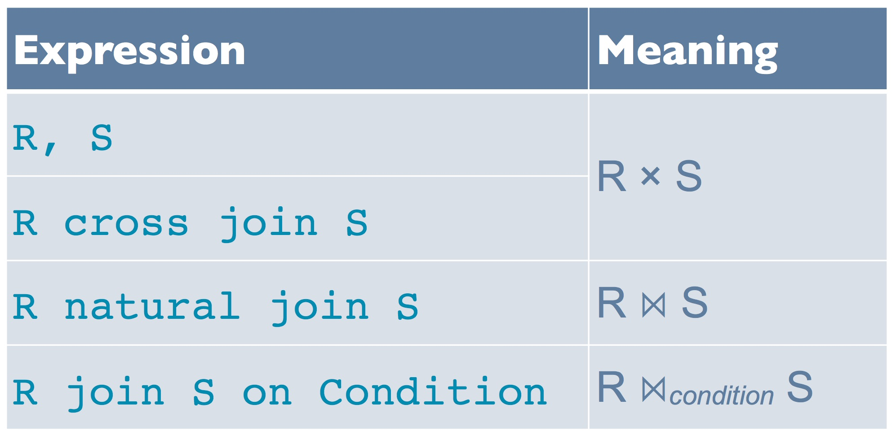
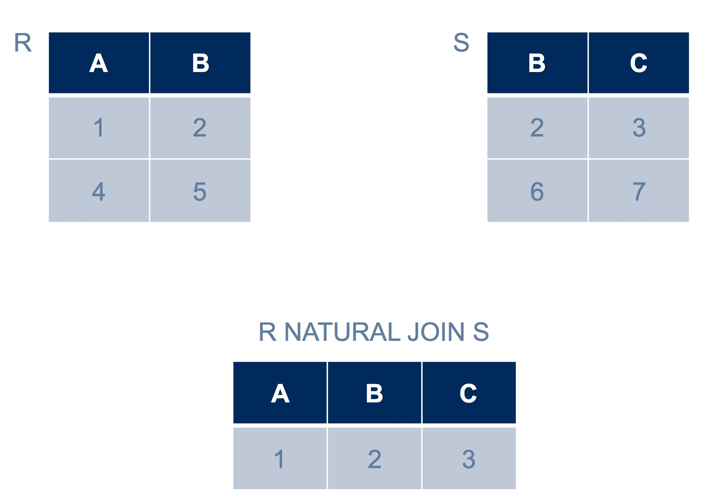
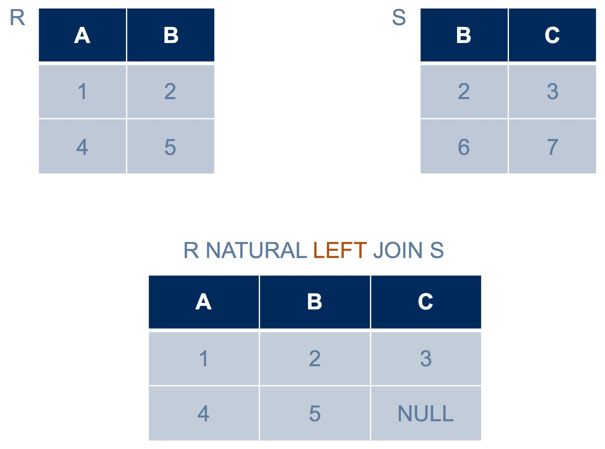
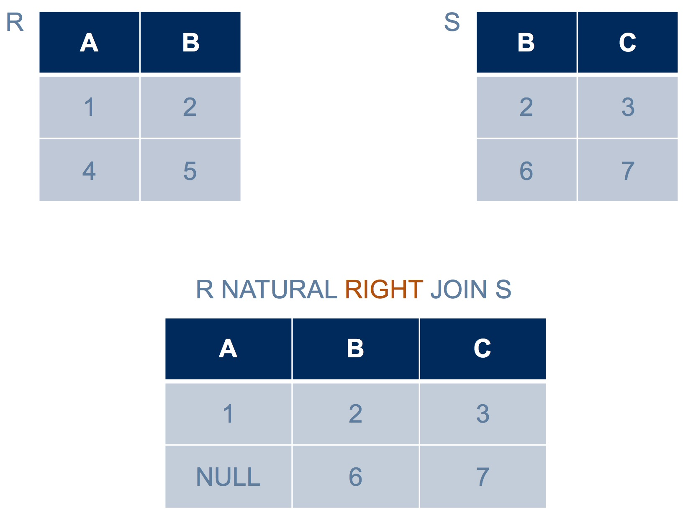
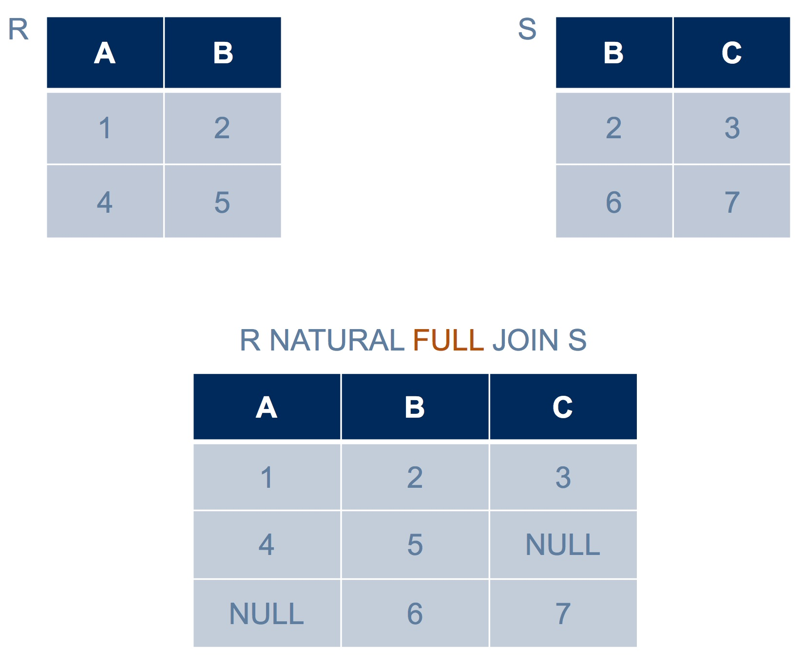
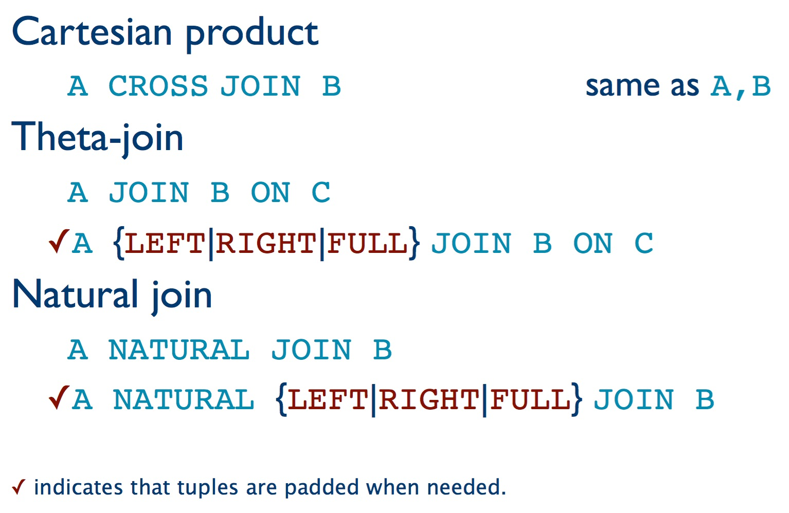
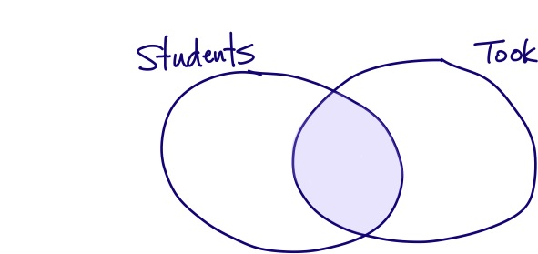
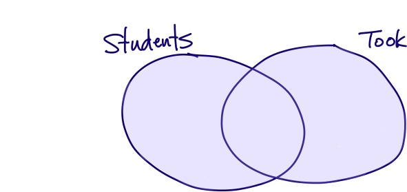
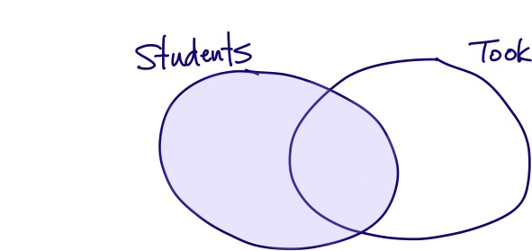

So far, we’ve seen only Cartesian product. But all the joins you know from relational algebra have a counterpart in SQL. Any of them can go in a FROM clause:

Dangling tuples
When we join tables R and S using NATURAL JOIN or using JOIN ON, a condition must be met in order for a given combination of a tuple r from R and a tuple s from S to be included in the result: With NATURAL JOIN, r and s must agree on all attributes of the same name; with JOIN ON, they must satisfy the join condition.
But what if there is a row r in R that doesn’t satisfy the condition with any of the rows of S? Or a row s from S that never finds a partner in table R? These tuples are entirely missing from the result. Here’s an example:

The tuple <4, 5> from R is not represented in the result, nor is the tuple <6, 7> from S. (We call these dangling tuples.) If we want such tuples included in the result, there is another class of joins that can include them, called outer joins.
Outer joins
An outer join preserves these dangling tuples by padding them with null values where needed. For example, <4, 5> has no tuple from S that can partner with it and provide a value in column C, so it gets a null in that column. (The joins we learned earlier don’t pad with nulls, and are called an inner joins.)
There are three kinds of outer join. A left outer join preserves dangling tuples from the table on the left-hand side only. For example:

Here, row <4, 5> from the left-hand table, R, is preserved in the result. But row <6, 7> from the right-hand table, S, is not preserved.
A right outer join preserves dangling tuples from the table on the right-hand side only. For example:

A full outer join does both. For example:

SQL syntax for outer joins
Only a NATURAL JOIN or a JOIN ON (theta join) can leave dangling tuples, so only they have the option to be either an inner or an outer join. To get an outer join, we can simply say LEFT OUTER, RIGHT OUTER, or FULL OUTER immediately before the word JOIN. In fact, we don’t have to say OUTER, since simply saying LEFT, RIGHT or FULL implies that it is an outer join. If we say nothing, we get the regular inner join that you learned about earlier.
To summarize, these are all the kinds of join expression that we have seen:

A visual representation
You may wonder why we use the terms “inner” and “outer” join. Venn diagrams make this clear.
Recall our schema for a simple university database:
- Student(sID, surName, firstName, campus, email, cgpa)
- Course(dept, cnum, name, breadth)
- Offering(oID, dept, cNum, term, instructor)
- Took(sID, oID, grade)
- and the foreign key relationships that you will recall
Let’s look at an inner natural join and all the varieties of outer natural join between Student and Took. (The same observations would hold with a JOIN ON between Student and Took.) Because these tables have the attribute sID in common, and no others, a natural join will only keep combinations of a row from Student and a row from Took with the same sID. But depending on the kind of natural join we pick, sIDs that appear in only one of the tables may also be included.
We will draw Venn diagrams to show the sIDs in table Student, the sIDs in table Took, and the sIDs in the intersection. We can then highlight the siDs that will appear in the result of the query.
Inner join
This inner natural join:
will include only the sID values that are in the intersection of Student and Took:

Full outer join
A full outer join:
will include all sID values that are in the union:

Left outer join
A left outer join:
will include all sID values that are in the union plus those that are in Student only:

Right outer join
A right outer join:
will include all sID values that are in the union plus those that are in Took only:

Natural join is brittle
There is a practical matter to consider about natural join.
Here is a perfectly sensible query on our university database:
Suppose we wanted to extend the database so that it records the campus on which an offering of a course occurred. It would make sense, then, to add a campus column to the Offering table. What would happen to our query? The meaning of the query would change, and it would likely return far fewer rows. (Be sure you can see the difference the slightly modified schema makes.) This isn’t a good thing! We wouldn’t want a simple extension to our schema to change the meaning of any already-written queries.
So we’ve see that natural join is “brittle” – it breaks easily. This is because the join condition is out of the programmer’s control: It is inferred from the schema rather than explicitly written by the programmer. We could, instead, make it explicit, either with a Cartesian product and a WHERE clause:
SELECT Student.sID, instructor
FROM Student, Took, Offering
WHERE Student.sid = Took.sid and
Took.oid = Offering.oid and
grade > 50;(Notice that we must disambiguate which sID we mean, either Student.sID or Took.sID, even though we know from the WHERE clause that they have the same value.) Or we could make the join condition explicity by using a JOIN ON:
SELECT Student.sID, instructor
FROM Student JOIN Took ON Student.sid = Took.sid
JOIN Offering ON Took.oid = Offering.oid
WHERE grade > 50;Either way, our query is less brittle; it does the same thing regardless of whether or not we have the extra campus column in table Offering, The meaning of the query is also more clear, since nothing is hidden.
Of these two approaches, it is arguably better to use JOIN ON, because it nicely separates the join condition from the actual filtering that we wish to do. And if we wish to use an outer join, we must use JOIN ON.
One more kind of join: JOIN USING
There is another kind of join in SQL: JOIN USING. It is like a natural join except that you specify which, among the columns that occur in both tables, will be forced to match. For example, we could write:
SELECT sID, instructor
FROM Student JOIN Took USING (sID)
JOIN Offering USING (oID)
WHERE grade > 50;Notice that we no longer have to disambiguate sID. This is because, as in a natural join, only one column for sID is in the result of the join. Also notice a small synctactic detail: we must use round brackets to enclose our list of attributes to be matched, even if there is only one.
Because we name the attributes to be matched, a JOIN USING does not have the brittleness of natural join. However, the attributes that we specify for matching must have the same name in the tables being joined. If we want to match attributes with different names, or to enforce any other kind of join condition, we can use JOIN ON.
See the excellent PostgreSQL Documentation for further details.